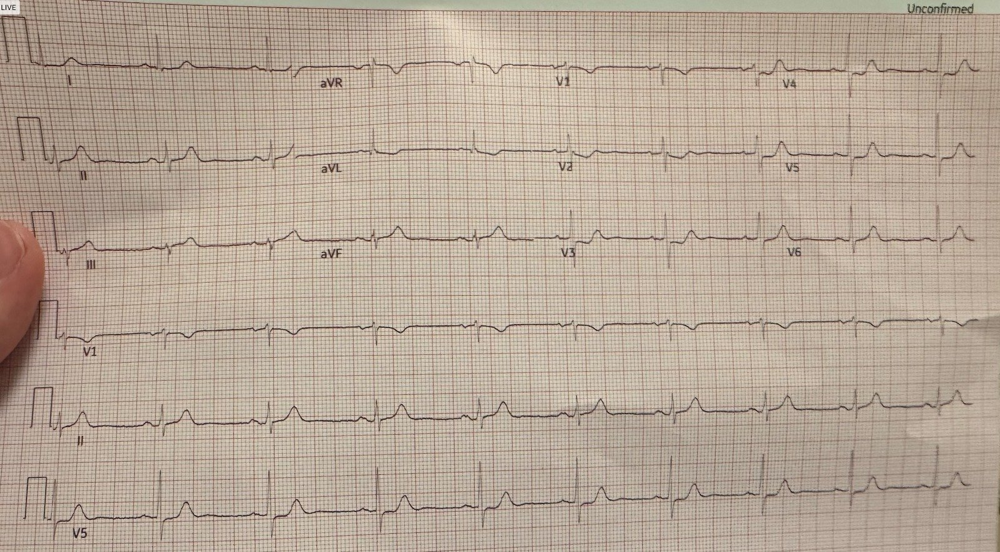
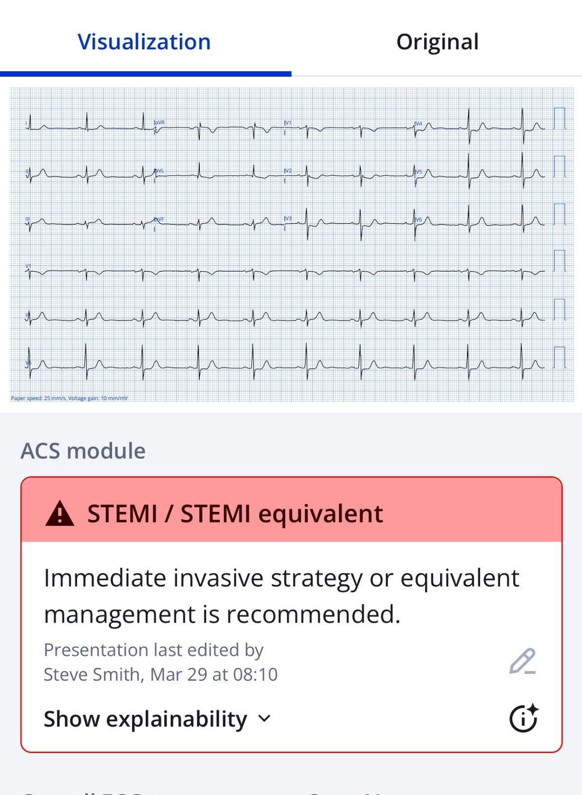
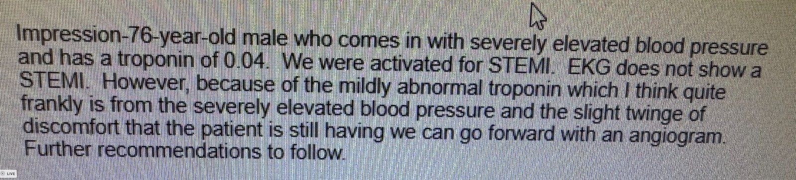
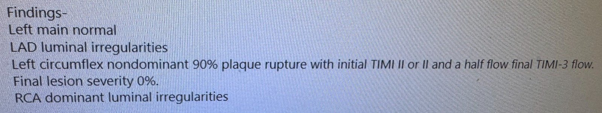
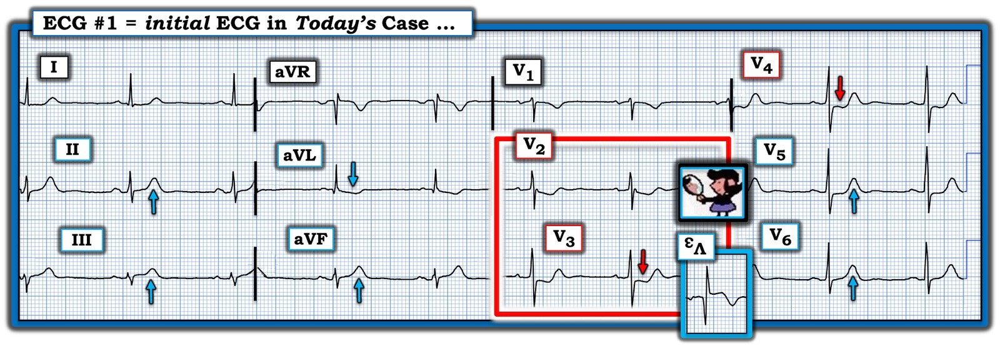

11/04/2025 — Hãy xem điều gì xảy ra khi bạn đứng về phía bệnh nhân trước một bác sĩ tim mạch hoài nghi.
Bản dịch tiếng Việt của bài "Look what happens when you advocate for your patient with a skeptical cardiologist." – Dr. Smith’s ECG Blog. Giữ nguyên toàn bộ 6 hình ảnh của bản gốc.
Khi đang dự hội nghị ACC, tôi nhận được tin nhắn này từ một cựu bác sĩ nội trú:
Chào buổi sáng thầy Steve! Mong thầy vẫn khỏe.
Em chỉ muốn hỏi thầy nghĩ gì về cái này?


Anh ấy viết: “Với em, ST dốc xuống ở V2/V3 luôn là OMI cho đến khi chứng minh được điều ngược lại. Vùng dưới trông cũng tối cấp.”
“Em đã kích hoạt phòng thông tim (cath lab), bác sĩ tim mạch không thấy ấn tượng. Đang chờ troponin.”
Smith: “Nó chẩn đoán xác định OMI! Các bác sĩ tim mạch hiếm khi thấy ấn tượng vì họ không hiểu các dấu hiệu OMI trên điện tâm đồ. Hãy luôn đứng về phía bệnh nhân, ngay cả khi bác sĩ tim mạch không đồng ý.”
Các sóng T ở chuyển đạo dưới bị “phồng” lên. Chúng là sóng T tối cấp. Có một sóng T tối cấp đảo ngược soi gương ở chuyển đạo aVL. ST chênh xuống nhẹ ở các chuyển đạo trước tim phải là chẩn đoán xác định OMI thành sau. OMI thành dưới và thành sau thường đi cùng nhau. Tất cả khớp lại thành một OMI thành dưới và thành sau.
Sau đó anh ấy cung cấp một ít bệnh sử: “Bệnh sử kinh điển của đau thắt ngực, vài giờ đau ngực như bị đè nghiến.”
Bác sĩ tim mạch nói với em: “đó không phải sóng T tối cấp và đây không phải nhồi máu cơ tim thành sau, nhưng dù sao tôi cũng sẽ vào.”
“Giờ anh ấy đang ở đây, và em nghĩ anh ấy sắp đưa bệnh nhân vào phòng thông tim, dù anh ấy không tin em.”
“Anh ấy đã cố giảng cho em về điện tâm đồ và em chỉ nói rằng thầy là người hướng dẫn của em và đã dạy em xử trí nó như một OMI, anh ấy vẫn không thấy ấn tượng nhưng dù sao vẫn đưa bệnh nhân đi thông tim.”
“Em đã dùng bài viết này (bên dưới) để hướng dẫn người ghi chép hồ sơ (scribe) của em, có lẽ em sẽ gửi cho bác sĩ tim mạch, nếu em đủ can đảm”
7 steps to missing posterior Occlusion MI, and how to avoid them. (7 bước dẫn tới bỏ sót nhồi máu cơ tim do tắc thành sau, và cách tránh chúng.)
Đây là kết quả đọc của Queen of Hearts:


Đây là nhận định của bác sĩ tim mạch: “Điện tâm đồ không cho thấy STEMI.”


Đây là báo cáo thông tim (dòng chảy TIMI-2 ở động mạch mũ — đã đặt stent):


Điểm cần học:
Chỉ vì bác sĩ tim mạch nói đó “không phải STEMI” và “muốn giảng cho bạn về điện tâm đồ”, điều đó không có nghĩa là bạn nên lùi bước.
Họ không nhận ra những hình ảnh này.
Hãy dùng Queen of Hearts!!
Đây là một ví dụ hay khác về OMI thành sau:
Occlusion/reperfusion through 6 ‘normal’ ECGs (Tắc/tái tưới máu qua 6 điện tâm đồ “bình thường”)

===================================
BÌNH LUẬN CỦA TÔI, bởi KEN GRAUER, MD (11/4/2025):
===================================
Ca hôm nay đặt ra câu hỏi: “Phải làm gì khi bạn biết mình đúng — và bạn biết rằng bác sĩ hội chẩn của bạn (trong ca này là bác sĩ tim mạch trực) đã sai?”
- Câu trả lời: Bệnh nhân là trên hết — điều đó có nghĩa là khi bạn biết mình đúng (tức là, trong ca này, khi bạn biết bệnh nhân đang bị OMI cấp) — thì bạn nên tiếp tục truyền đạt một cách khéo léo (nhưng kiên quyết) điều bạn biết là đúng cho đến khi bệnh nhân được xử trí phù hợp (mà trong ca hôm nay là thông tim kịp thời kèm PCI ).
- “Tin tốt” — là kết quả thông tim kịp thời hầu như luôn cho thấy câu trả lời (mà trong ca hôm nay đã xác nhận điều cựu bác sĩ nội trú của bác sĩ Smith đã tiên đoán, cụ thể là OMI thành sau cấp).
LƯU Ý: Việc trì hoãn đáng kể thông tim đôi khi có thể dẫn tới kết quả âm tính giả (tức là, nếu đã qua một thời gian và đã có tái tưới máu tự phát — và/hoặc nếu không thực hiện chẩn đoán hình ảnh trong lòng mạch ở những ca mà thông tim tiêu chuẩn còn mơ hồ) — khi đó, “bằng chứng” có thể nằm ở mức tăng troponin và các điện tâm đồ liên tiếp cho thấy sự tiến triển của các thay đổi cấp, cuối cùng là sóng T tái tưới máu ở (các) vùng bị ảnh hưởng.
- Để xem một ví dụ về việc có thể xảy ra thông tim âm tính giả như thế nào — Hãy xem bài ngày 17 tháng Ba năm 2025.
Còn Làm Gì Khác Khi Bạn BIẾT Mình Đúng?
Tôi cho rằng những “việc khác” bạn có thể làm khi bạn biết mình đúng (nhưng bác sĩ hội chẩn của bạn vẫn chưa bị thuyết phục) — bao gồm:
- Cho bác sĩ hội chẩn của bạn thấy QOH (Queen Of Hearts) có thể hỗ trợ như thế nào! Như bác sĩ Smith đã nêu — QOH không hề do dự khi gọi điện tâm đồ ban đầu của ca hôm nay là tương đương STEMI cần “chiến lược can thiệp xâm lấn ngay lập tức”.
- Khéo léo (nhưng kiên quyết) truyền đạt tới bác sĩ hội chẩn đang hoài nghi của bạn rằng trong một ca như ca hôm nay, khi bệnh nhân đến với “bệnh sử kinh điển của đau thắt ngực, với vài giờ CP như bị đè nghiến” (Chest Pain — đau ngực) — bạn thấy bất thường điện tâm đồ ở không ít hơn 10/12 chuyển đạo, mà khi gộp lại, kể nên một câu chuyện. Hy vọng rằng — bác sĩ hội chẩn đang hoài nghi của bạn sẽ khó phủ nhận câu chuyện của bạn khi thông tim chứng minh tiên đoán của bạn hoàn toàn chính xác.
Các dấu hiệu trên điện tâm đồ là gì?
Để rõ ràng, trong Hình 1 — tôi đã sao lại và đánh dấu điện tâm đồ ban đầu của ca hôm nay. Nhịp là nhịp chậm xoang với tần số ~55-60/phút.
- “Con mắt” của tôi lập tức bị thu hút ở bệnh nhân có CP như bị đè nghiến mới xuất hiện này — bởi hình dạng ST-T ở chuyển đạo V3, được củng cố bởi ST-T bất thường ở chuyển đạo lân cận V2 (các chuyển đạo nằm trong hình chữ nhật MÀU ĐỎ). Như cựu bác sĩ nội trú của bác sĩ Smith đã nêu — ở bệnh nhân có CP như bị đè nghiến mới xuất hiện này, có thể chẩn đoán OMI thành sau cấp trong vòng chưa tới 5 giây — trừ khi và cho đến khi thông tim chứng minh điều ngược lại.
- Nghiệm pháp soi gương (Mirror Test) ở chuyển đạo V3 rõ ràng dương tính (Xem phần Bình luận của tôi ở cuối trang trong bài ngày 21 tháng Chín năm 2022). Nhưng bất kể bạn có là “người hâm mộ” nghiệm pháp soi gương hay không — chỉ cần “câu thần chú” của bác sĩ Smith là đủ = ST chênh xuống tối đa ở một hoặc nhiều chuyển đạo V2,V3,V4 ở bệnh nhân có CP mới xuất hiện = OMI thành sau cho đến khi chứng minh được điều ngược lại.
- ST-T bất thường tiếp tục xuất hiện ở các chuyển đạo trước tim lân cận V5,V6 (cả hai đều cho thấy ST thẳng đuỗn kèm chênh xuống nhẹ và phần cuối sóng T dương không tương xứng).
- Như mọi khi — bất cứ khi nào thấy bằng chứng của OMI thành sau cấp — chúng ta nên tìm kỹ OMI thành dưới cấp (tức là, Dù đôi khi chúng ta sẽ gặp OMI thành sau đơn độc — nguồn cấp máu chung cho thành dưới và thành sau thất trái thường dẫn tới thay đổi đồng thời ở các chuyển đạo dưới và sau).
- Mỗi chuyển đạo dưới trên điện tâm đồ ban đầu của ca hôm nay đều biểu hiện đoạn ST thẳng đuỗn, với sóng T dương cao hơn và “đầy đặn” hơn dự kiến một cách không tương xứng mà chúng ta biết là tối cấp vì: i) Những sóng T này rất lớn so với biên độ QRS nhỏ ở chính các chuyển đạo này; ii) Các sóng T ở chuyển đạo dưới này xuất hiện cùng với OMI thành sau cấp ở các chuyển đạo trước tim; và, iii) Có ST chênh xuống soi gương ở chuyển đạo aVL (và ở mức độ ít hơn — dưới dạng đoạn ST dẹt bất thường ở chuyển đạo I, là chuyển đạo bên cao còn lại).
ĐIỀU CỐT LÕI: Ghi nhận công lao của cựu bác sĩ nội trú của bác sĩ Smith vì đã lập tức nhận ra OMI dưới-sau cấp của ca hôm nay, với nhu cầu thông tim khẩn trương. Ghi nhận công lao của bác sĩ lâm sàng này vì đã bảo vệ quyền lợi bệnh nhân của mình một cách quan trọng — nhờ đó bệnh nhân được PCI kịp thời như cần thiết.

